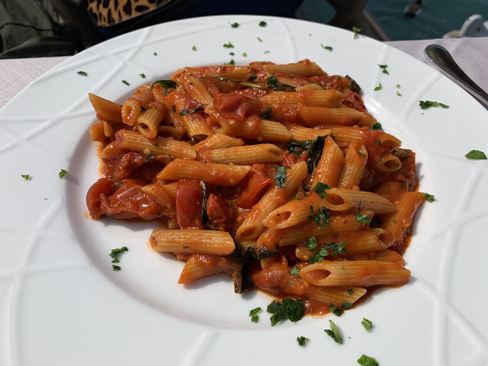
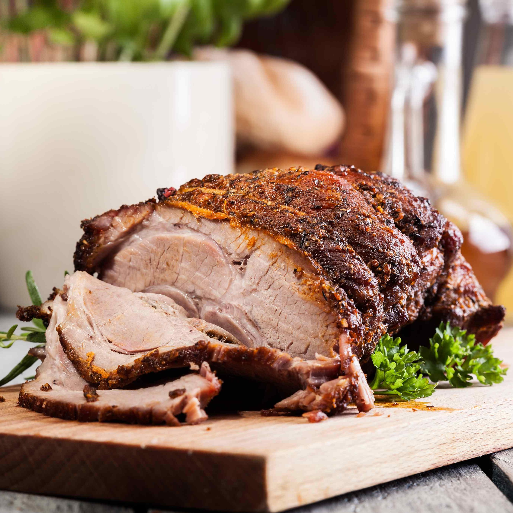
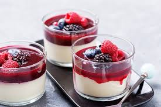
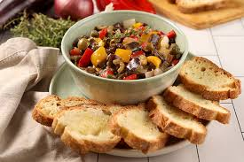

Ballande-Massari
Sua experiência gastronômica
Localizado no centro gastronômico da cidade,
Ballande-Massari é o ideal restaurante de comida italiana,
com chefes de cozinha renomados e reconhecimento internacional.
Ballande-Massari é mais do que um restaurante italiano - é uma experiência autêntica que transporta você diretamente para o coração da Itália. Localizado no centro da cidade, nosso restaurante combina a tradição culinária italiana com um ambiente acolhedor e elegante, ideal para todas as ocasiões.
Nós prezamos pela qualidade e autenticidade de nossos pratos. Nossos chefs são mestres na arte da culinária italiana e utilizam apenas os ingredientes mais frescos e de alta qualidade, muitos deles importados diretamente da Itália. Do clássico Spaghetti alla Carbonara ao delicioso Risotto ai Funghi, cada prato é preparado com paixão e atenção aos detalhes.
Ballande-Massari é mais do que um restaurante italiano - é uma experiência autêntica que transporta você diretamente para o coração da Itália. Localizado no centro da cidade, nosso restaurante combina a tradição culinária italiana com um ambiente acolhedor e elegante, ideal para todas as ocasiões.
Nós prezamos pela qualidade e autenticidade de nossos pratos. Nossos chefs são mestres na arte da culinária italiana e utilizam apenas os ingredientes mais frescos e de alta qualidade, muitos deles importados diretamente da Itália. Do clássico Spaghetti alla Carbonara ao delicioso Risotto ai Funghi, cada prato é preparado com paixão e atenção aos detalhes.



